Parallax-Tolerant Image Stitching Based on Robust Elastic Warping
Author: 崔星星
Date: 2025.11
Email: <mailto:cuixingxing150@gmail.com cuixingxing150@gmail.com>
This example demonstrates the process and visualization of stitching two parallax-tolerant Images. The global homography/similarity estimation is separated from the REW‑TPS algorithm to reduce algorithmic coupling.
Contents
- 1. Input Images and Basic Setup
- 2. Detect and Match Features (SIFT)
- 3. Estimate Global Projective Transform (homography)
- 4. Create Panorama Reference and Warp By Global Homography
- 5. Select Control Points and Fit Robust Elastic Warp (REW)
- 6. Prepare Meshgrid Coordinates For Local Warping
- 7. Blending To Create Final Panorama
- 8. Visualization: heatmap and deformation grid
- 9. Create Panorama Reference and Warp By Global Similarity Transformatioin
- 10. Prepare Meshgrid Coordinates For Local Warping With Two Images
- References
- Support Functions (visual helpers)
1. Input Images and Basic Setup
Change paths here if you want to run other image pairs. Provided images are under `two_views/` in this repo.
img1 = imread("./two_views/railtracks/01.jpg"); % reference / fixed image img2 = imread("./two_views/railtracks/02.jpg"); % moving image to be warped % Convert to grayscale for feature detection gray1 = im2gray(img1); gray2 = im2gray(img2);
2. Detect and Match Features (SIFT)
We detect a large set of SIFT keypoints and then sample them uniformly to avoid dense clustering in textured regions.
numPoints = 5000; % SIFT detection. Tune `EdgeThreshold` / `ContrastThreshold` if few points % appear or too many noisy points appear. points1 = detectSIFTFeatures(gray1, EdgeThreshold=500, ContrastThreshold=0); points2 = detectSIFTFeatures(gray2, EdgeThreshold=500, ContrastThreshold=0); % Uniformly sample points (helper function exists in MATLAB File Exchange % or implemented in this repo). This reduces spatial bias. points1 = selectUniform(points1, numPoints, size(gray1)); points2 = selectUniform(points2, numPoints, size(gray2)); % Extract descriptors and match them [features1, validPoints1] = extractFeatures(gray1, points1); [features2, validPoints2] = extractFeatures(gray2, points2); indexPairs = matchFeatures(features1, features2); % Collect matched point coordinates matchedPoints1 = validPoints1(indexPairs(:, 1), :); matchedPoints2 = validPoints2(indexPairs(:, 2), :); matchedPoints1 = matchedPoints1.Location; matchedPoints2 = matchedPoints2.Location; % Visual check of matched points (montage view) figure('Name','SIFT matches'); showMatchedFeatures(img1, img2, matchedPoints1, matchedPoints2, "montage"); title("Points matched using SIFT features")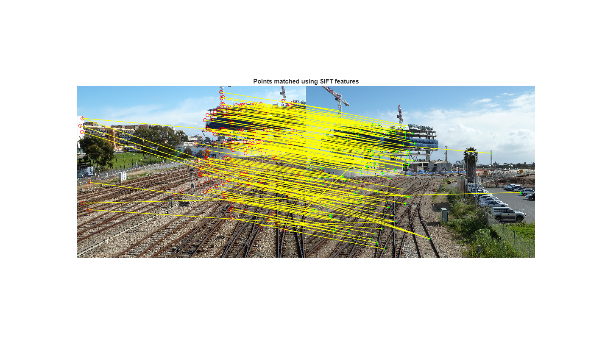
3. Estimate Global Projective Transform (homography)
We robustly estimate the fundamental matrix then derive a projective transform (homography) using the consistent inliers. This aligns the two images globally and provides a good initialization for the local REW step.
[~, ok] = estimateFundamentalMatrix(matchedPoints1, matchedPoints2, Method="Norm8Point"); matchedPoints_ok1 = matchedPoints1(ok, :); matchedPoints_ok2 = matchedPoints2(ok, :); % Estimate a projective transform H such that points in img1 map to img2 tformH = estgeotform2d(matchedPoints_ok1, matchedPoints_ok2, "projective");
4. Create Panorama Reference and Warp By Global Homography
Create an output reference frame that covers both images after warping.
tformInv = invert(tformH); xLimitsIn = [1, size(img2, 2)]; yLimitsIn = [1, size(img2, 1)]; [xLimitsOutInImg1, yLimitsOutInImg1] = outputLimits(tformInv, xLimitsIn, yLimitsIn); xWorldLimits = [min(xLimitsOutInImg1(1), 1), max(xLimitsOutInImg1(2), size(img1, 2))]; yWorldLimits = [min(yLimitsOutInImg1(1), 1), max(yLimitsOutInImg1(2), size(img1, 1))]; panoWidth = ceil(diff(xWorldLimits)); panoHeight = ceil(diff(yWorldLimits)); panoRef = imref2d([panoHeight, panoWidth], xWorldLimits, yWorldLimits); % Warp both images into the panorama reference (global homography alignment) warpImg1 = imwarp(img1, rigidtform2d(), outputView=panoRef); warpImgH2 = imwarp(img2, tformInv, outputView=panoRef); mask1 = imwarp(ones(size(img1, [1, 2]),'logical'), rigidtform2d(), outputView=panoRef); mask2 = imwarp(ones(size(img2, [1, 2]),'logical'), tformInv, outputView=panoRef); figure('Name','Global Homography Alignment'); imshowpair(warpImg1, panoRef, warpImgH2, panoRef); title("Alignment Using Global Homography")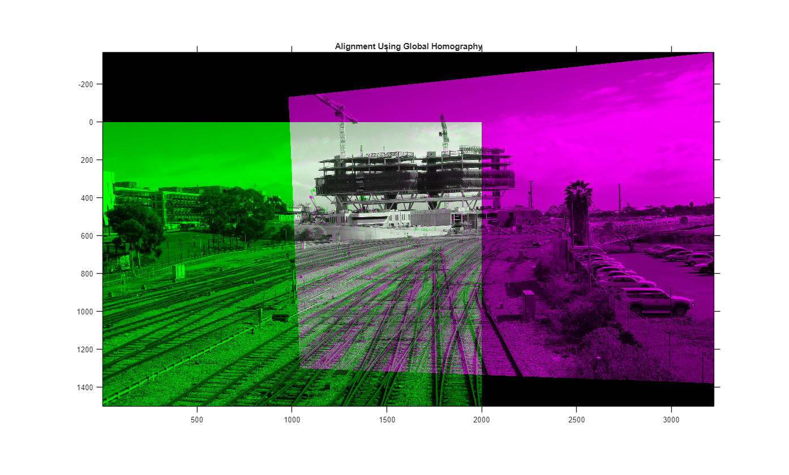
5. Select Control Points and Fit Robust Elastic Warp (REW)
We find unique overlapping matched points, transform them into the same coordinate frame and use them as control points for REW.
[~, idx1] = unique(round(matchedPoints_ok1), 'rows', 'stable'); [~, idx2] = unique(round(matchedPoints_ok2), 'rows', 'stable'); idx = intersect(idx1, idx2); fixedPtsInImg1 = matchedPoints_ok1(idx, :); % fixed points (Img1 coords) movingPtsInImg2 = matchedPoints_ok2(idx, :); % corresponding points in Img2 fixedPtsInImg2 = transformPointsForward(tformH, fixedPtsInImg1); % Img2 world coords % Regularization parameter for REW (empirical). You may tune to control % smoothness vs. data fidelity. Here scaled by image area. lambda = 0.001 * prod(size(img1, [1, 2])); % Fit REW: this constructs the warp object (obj) and selects inliers. % The class `RewWarp` is part of this repo and implements the method from % the paper. Inspect `RewWarp.m` for details. obj = RewWarp(movingPtsInImg2, fixedPtsInImg2, lambda) % update matched points using 3 sigma removal fixedPtsInImg1 = fixedPtsInImg1(obj.inlierIdx, :); movingPtsInImg2 = movingPtsInImg2(obj.inlierIdx, :); figure('Name','Inliers After REW Fit'); showMatchedFeatures(img1, img2, fixedPtsInImg1, movingPtsInImg2, "montage"); title("Inlier matches after deduplication and 3-sigma removal")
Warning: Matrix is close to singular or badly scaled. Results may be inaccurate.
RCOND = 2.565509e-18.
Warning: Matrix is close to singular or badly scaled. Results may be inaccurate.
RCOND = 3.868775e-18.
Warning: Matrix is close to singular or badly scaled. Results may be inaccurate.
RCOND = 3.068048e-17.
Warning: Matrix is close to singular or badly scaled. Results may be inaccurate.
RCOND = 3.117501e-17.
Warning: Matrix is close to singular or badly scaled. Results may be inaccurate.
RCOND = 3.214570e-17.
Warning: Matrix is close to singular or badly scaled. Results may be inaccurate.
RCOND = 3.284345e-17.
Warning: Matrix is close to singular or badly scaled. Results may be inaccurate.
RCOND = 3.301699e-17.
Warning: Matrix is close to singular or badly scaled. Results may be inaccurate.
RCOND = 3.318950e-17.
obj =
RewWarp with properties:
movingPts: [165×2 double]
fixedPts: [165×2 double]
wx: [165×1 double]
wy: [165×1 double]
ax: 0.0010187
bx: 0.094527
cx: -282.64
ay: 0.0016731
by: 0.00068012
cy: -4.2547
lambda: 75398
gxy: [165×2 double]
inlierIdx: [165×1 double]
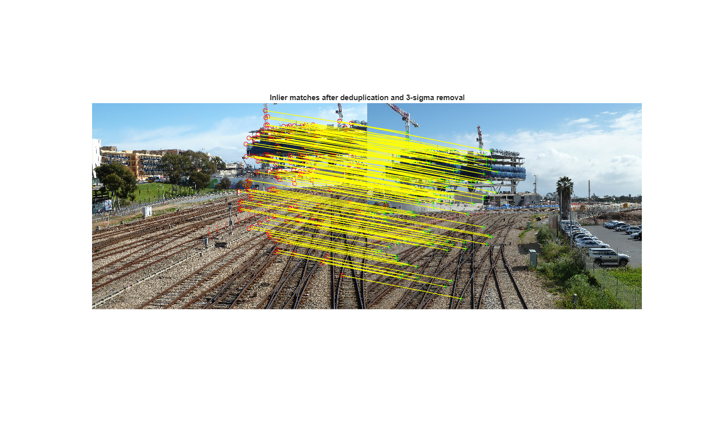 6. Prepare Meshgrid Coordinates For Local Warping
The following maps coordinates between the panorama world and the moving image. We build a mesh to feed into the REW-based warping function.
u_im = xLimitsOutInImg1(1):xLimitsOutInImg1(2); v_im = yLimitsOutInImg1(1):yLimitsOutInImg1(2); [U, V] = meshgrid(u_im, v_im); [u_im_, v_im_] = transformPointsForward(tformH, U(:), V(:)); offset_x = round(xLimitsOutInImg1(1) - panoRef.XWorldLimits(1)); offset_y = round(yLimitsOutInImg1(1) - panoRef.YWorldLimits(1)); % Build full panorama grid in world coordinates and transform to image [u, v] = meshgrid(xWorldLimits(1):xWorldLimits(2), yWorldLimits(1):yWorldLimits(2)); u = imresize(u, [panoHeight, panoWidth]); v = imresize(v, [panoHeight, panoWidth]); [u_, v_] = transformPointsForward(tformH, u(:), v(:)); % Overlap region between images (used to limit where local warp applies within `warpImage` object-function) [overlapLimitsU, overlapLimitsV] = outputLimits(tformH, [1, size(img1, 2)], [1, size(img1, 1)]); meshImg2_U = reshape(u_im_, size(U)); meshImg2_V = reshape(v_im_, size(V)); meshPano_U2 = reshape(u_, size(u)); meshPano_V2 = reshape(v_, size(v)); % Execute the local REW warp (warpImage is provided with the REW implementation) [warpImg2, gx, hy, eta] = warpImage(obj, img2, meshImg2_U, meshImg2_V, meshPano_U2, meshPano_V2, offset_x, offset_y, overlapLimitsU, overlapLimitsV); figure('Name','REW Warp Result'); imshowpair(warpImg1, panoRef,warpImg2,panoRef); title("Alignment Using REW")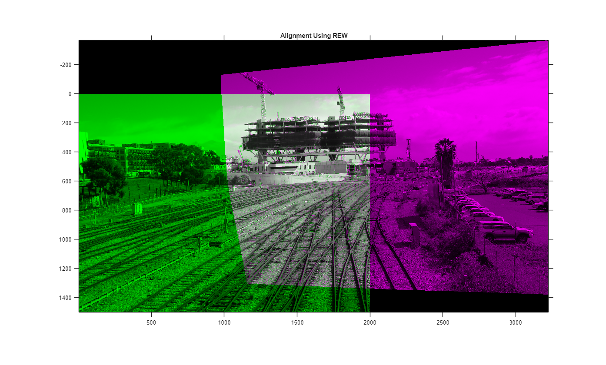
7. Blending To Create Final Panorama
Create simple average blending in overlap region. For production, use multi-band or seam-finding blends for better artifacts handling.
maskWarped = warpImg2 > 0; maskWarped = maskWarped(:, :, 1); maskOverlap = mask1 & maskWarped; pano = (im2double(warpImg1) + im2double(warpImg2)) ./ (im2double(maskOverlap) + 1); figure('Name','Final Panorama'); imshow(pano, panoRef); title("Stitching Using REW")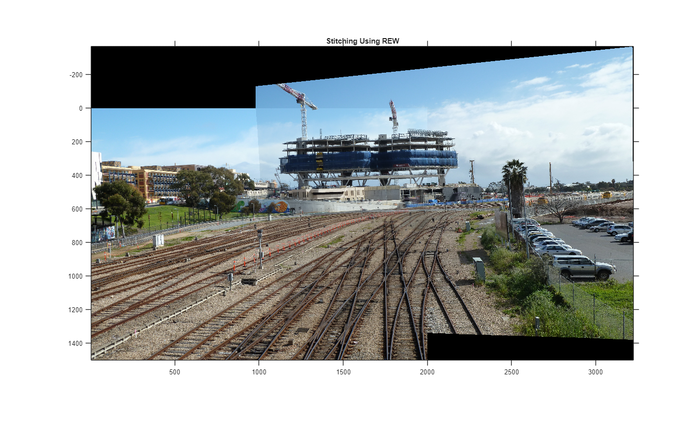
8. Visualization: heatmap and deformation grid
Visualize `eta` heatmap (shows where local deformation is strong)
CAMshow(im2uint8(pano), eta) title("\eta heatmap") % Visualize deformation grid on original and panorama coordinates interval_Grid = 40; % grid sampling (pixels) used for visualization [gridXInImg2, gridYInImg2] = meshgrid(1:interval_Grid:size(img2, 2), 1:interval_Grid:size(img2, 1)); [gridH, gridW] = size(gridXInImg2); [gridXInWorld, gridYInWorld] = transformPointsInverse(tformH, gridXInImg2(:), gridYInImg2(:)); [I, J] = worldToSubscript(panoRef, gridXInWorld, gridYInWorld); deformXInImg2 = gridXInImg2(:) + diag(gx(I, J)); deformYInImg2 = gridYInImg2(:) + diag(hy(I, J)); [deformGridXInWorld, deformGridYInWorld] = transformPointsInverse(tformH, deformXInImg2(:), deformYInImg2(:)); % Show grid on the global homography fused image globalHomoFuse = (im2double(warpImg1) + im2double(warpImgH2)) ./ (im2double(mask1 & mask2) + 1); Gridshow(globalHomoFuse, gridXInWorld, gridYInWorld, gridH, gridW, panoRef); title("Grid Show in Global Homography") % Show grid after adding local TPS-like deformation from REW Gridshow(pano, deformGridXInWorld, deformGridYInWorld, gridH, gridW, panoRef); title("Grid Show: Global Homography + Local TPS Warp") % Show deformation field overlayed on img2 Gridshow(img2, gridXInImg2, gridYInImg2, gridH, gridW, imref2d(size(img2))); hold on; quiver(gridXInImg2(:),gridYInImg2(:),diag(gx(I,J)),diag(hy(I,J)),'-r') title("Grid and Deformation Field in Img2 (deformation vectors)")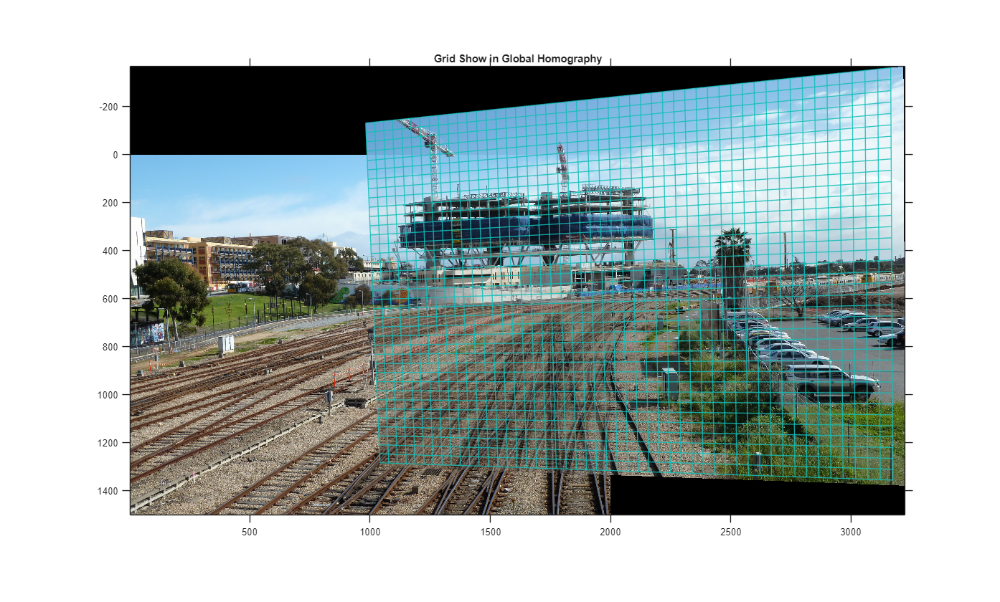
 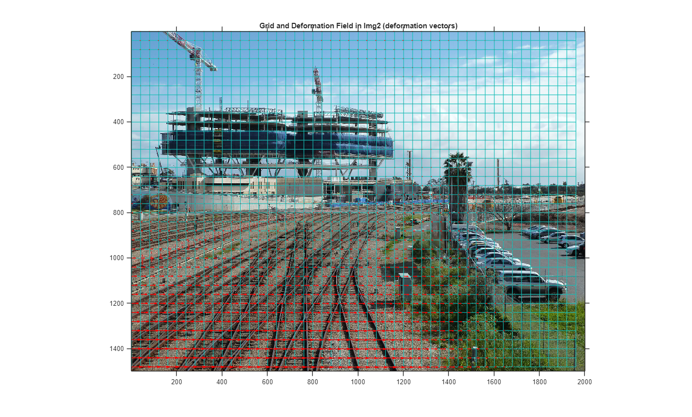
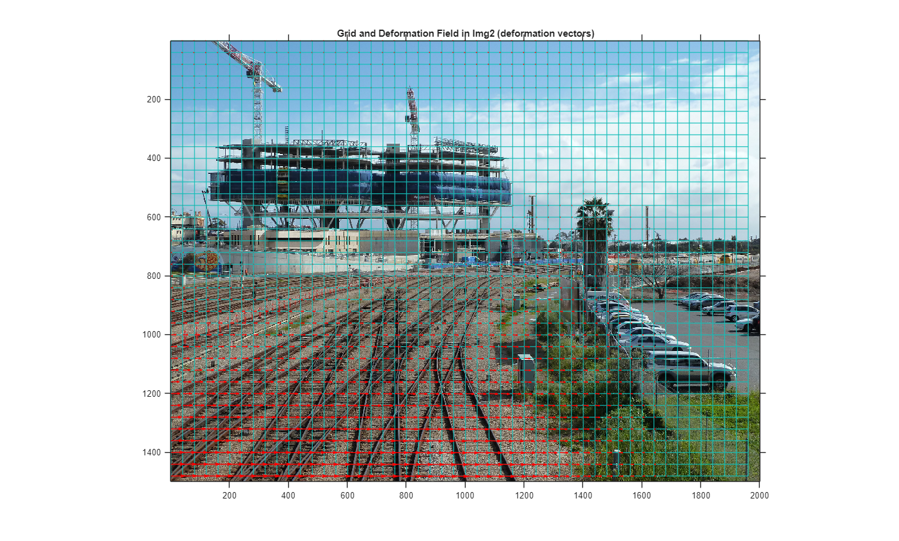 9. Create Panorama Reference and Warp By Global Similarity Transformatioin
Create an output reference frame that covers both images after warping.
% Estimate a similarity transform S such that points in img1 map to img2 tformS = estgeotform2d(fixedPtsInImg1, movingPtsInImg2, "similarity"); tformInv = invert(tformS); xLimitsIn = [1, size(img2, 2)]; yLimitsIn = [1, size(img2, 1)]; [xLimitsOutInImg1, yLimitsOutInImg1] = outputLimits(tformInv, xLimitsIn, yLimitsIn); xWorldLimits = [min(xLimitsOutInImg1(1), 1), max(xLimitsOutInImg1(2), size(img1, 2))]; yWorldLimits = [min(yLimitsOutInImg1(1), 1), max(yLimitsOutInImg1(2), size(img1, 1))]; panoWidth = ceil(diff(xWorldLimits)); panoHeight = ceil(diff(yWorldLimits)); panoRef = imref2d([panoHeight, panoWidth], xWorldLimits, yWorldLimits); % Warp both images into the panorama reference (global similarity alignment) warpImg1 = imwarp(img1, rigidtform2d(), outputView=panoRef); warpImg2 = imwarp(img2, tformInv, outputView=panoRef); figure('Name','Global Similarity Alignment'); imshowpair(warpImg1, panoRef, warpImg2, panoRef); title("Alignment Using Global Similarity")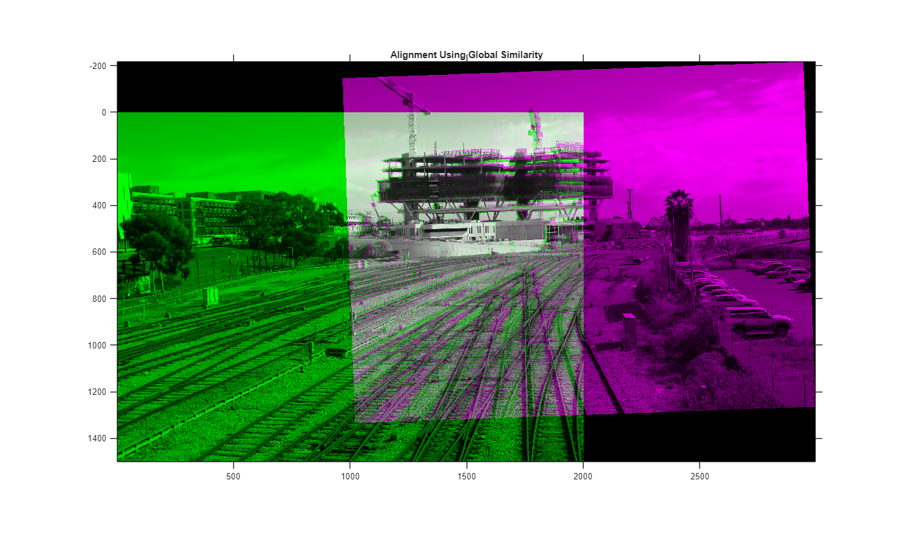
10. Prepare Meshgrid Coordinates For Local Warping With Two Images
The following maps coordinates between the panorama world and the moving image(image2) and reference image(image1). We build a mesh to feed into the REW-based warping function.
u_im = xLimitsOutInImg1(1):xLimitsOutInImg1(2);
v_im = yLimitsOutInImg1(1):yLimitsOutInImg1(2);
[U, V] = meshgrid(u_im, v_im);
[u_im_, v_im_] = transformPointsForward(tformS, U(:), V(:));
offset_x = round(xLimitsOutInImg1(1) - panoRef.XWorldLimits(1));
offset_y = round(yLimitsOutInImg1(1) - panoRef.YWorldLimits(1));
% Build full panorama grid in world coordinates for homography and similarity
[u, v] = meshgrid(xWorldLimits(1):xWorldLimits(2), yWorldLimits(1):yWorldLimits(2));
u = imresize(u, [panoHeight, panoWidth]);
v = imresize(v, [panoHeight, panoWidth]);
[uH_, vH_] = transformPointsForward(tformH, u(:), v(:));
[uS_, vS_] = transformPointsForward(tformS, u(:), v(:));
To remove the projection distortion from image 2 to image 1, and combined with a global similarity transform, decompose this into two separate homography transformations for the two images,the transformation matrices are 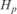,$H_q$
As the paper[1] states, we combine the homography and a similarity transformation using the techniques proposed in ANAP; i.e., 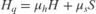
mu_S = uS_./size(img2, 2); mu_S(mu_S < 0) = 0; mu_S(mu_S > 1) = 1; mu_H = 1 - mu_S; u_ = mu_H .* uH_ + mu_S .* uS_; v_ = mu_H .* vH_ + mu_S .* vS_;
Now we apply for reference image(image1), 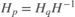,Note that the built-in function transformPointsInverse here performs the coordinate transformation using the inverse of the homography matrix , and (u_, v_) are the coordinates after applying 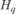.
% Compute the transformation for the reference image(image1) [uInImg1,vInImg1] = transformPointsInverse(tformH,u_,v_); % Overlap region between images (used to limit where local warp applies within `warpImage` object-function) [overlapLimitsU, overlapLimitsV] = outputLimits(tformS, [1, size(img1, 2)], [1, size(img1, 1)]); meshImg2_U = reshape(u_im_, size(U)); meshImg2_V = reshape(v_im_, size(V)); meshPano_U2 = reshape(u_, size(u)); meshPano_V2 = reshape(v_, size(v)); meshPano_U1 = reshape(uInImg1,size(u)); meshPano_V1 = reshape(vInImg1,size(v)); % Execute the local REW warp (`warpImage` is provided with the REW implementation) [warpImg2, gx, hy, eta] = warpImage(obj, img2, meshImg2_U, meshImg2_V, meshPano_U2, meshPano_V2, offset_x, offset_y, overlapLimitsU, overlapLimitsV); % Deformation image1 warpImg1 = imageInterp(img1,meshPano_U1,meshPano_V1); % visualize figure('Name','REW Warp Result'); imshowpair(warpImg1,panoRef, warpImg2,panoRef); title("Alignment Using REW With Similarity") % final panorama mask1 = imageInterp(ones(size(img1,[1,2])),meshPano_U1,meshPano_V1); maskWarped = warpImg2 > 0; mask2 = maskWarped(:, :, 1); maskOverlap = mask1 & mask2; pano = (im2double(warpImg1) + im2double(warpImg2)) ./ (im2double(maskOverlap) + 1); figure('Name','Final Panorama'); imshow(pano, panoRef); title("Stitching Using REW with Similarity")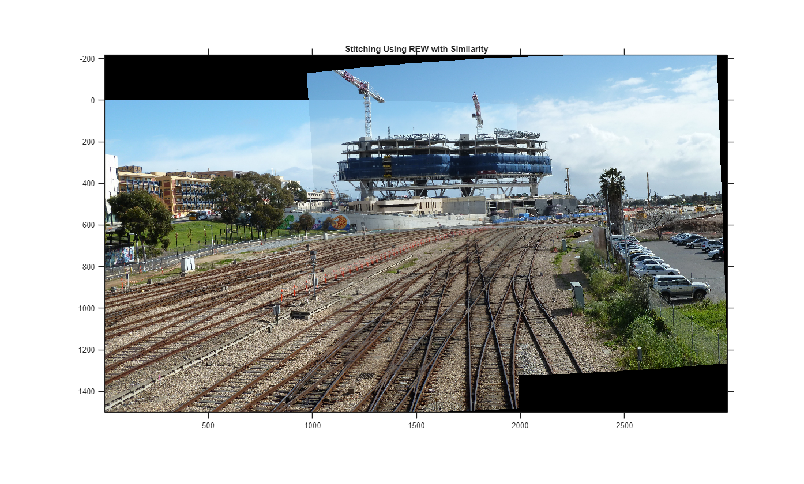
References
[1] J. Li, Z. Wang, S. Lai, Y. Zhai and M. Zhang, "Parallax-Tolerant Image Stitching Based on Robust Elastic Warping," IEEE Transactions on Multimedia, vol. 20, no. 7, pp. 1672-1687, July 2018.
[2] Matrix Representation of Geometric Transformations - MATLAB & Simulink
Support Functions (visual helpers)
These small helper functions display grids and heatmaps. They are kept at the end of the file for convenience so this script runs as a single file demo.
function Gridshow(im, x, y, gridH, gridW, panoRef) figure; imshow(im, panoRef); hold on; axis on; gridXInImg1 = reshape(x, [gridH, gridW]); gridYInImg1 = reshape(y, [gridH, gridW]); mesh(gridXInImg1, gridYInImg1, zeros(gridH, gridW), 'FaceAlpha', 0, 'EdgeAlpha', 0.85) end function CAMshow(im, CAM, coff) arguments im {mustBeNumeric} CAM (:, :) double coff (1, 1) double = 2 end imSize = size(im); CAM = imresize(CAM, imSize(1:2)); CAM = normalizeImage(CAM); cmap = jet(255) .* linspace(0, 1, 255)'; CAM = ind2rgb(uint8(CAM * 255), cmap) * 255; combinedImage = coff * double(rgb2gray(im)) + CAM; combinedImage = im2uint8(normalizeImage(combinedImage)); figure; imshow(combinedImage); end function N = normalizeImage(I) minimum = min(I(:)); maximum = max(I(:)); N = (I - minimum) / (maximum - minimum); end function outImage = imageInterp(inImage,mapX,mapY) outImage = images.internal.interp2d(inImage,mapX,mapY,'linear',0,false); end